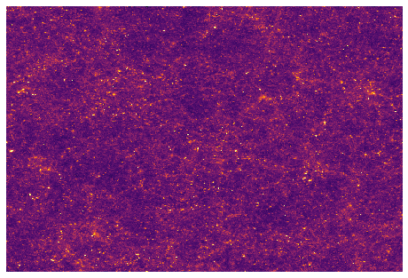
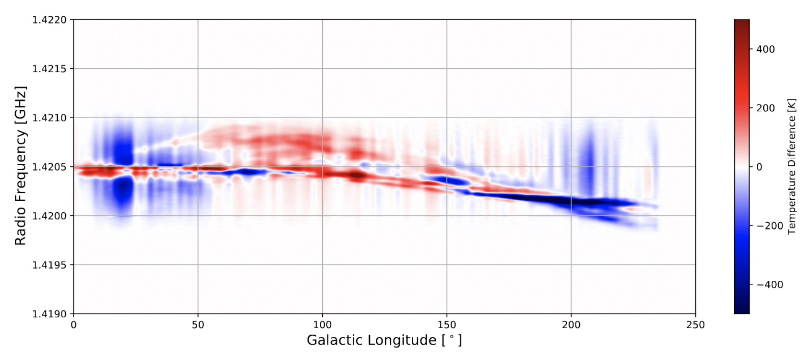
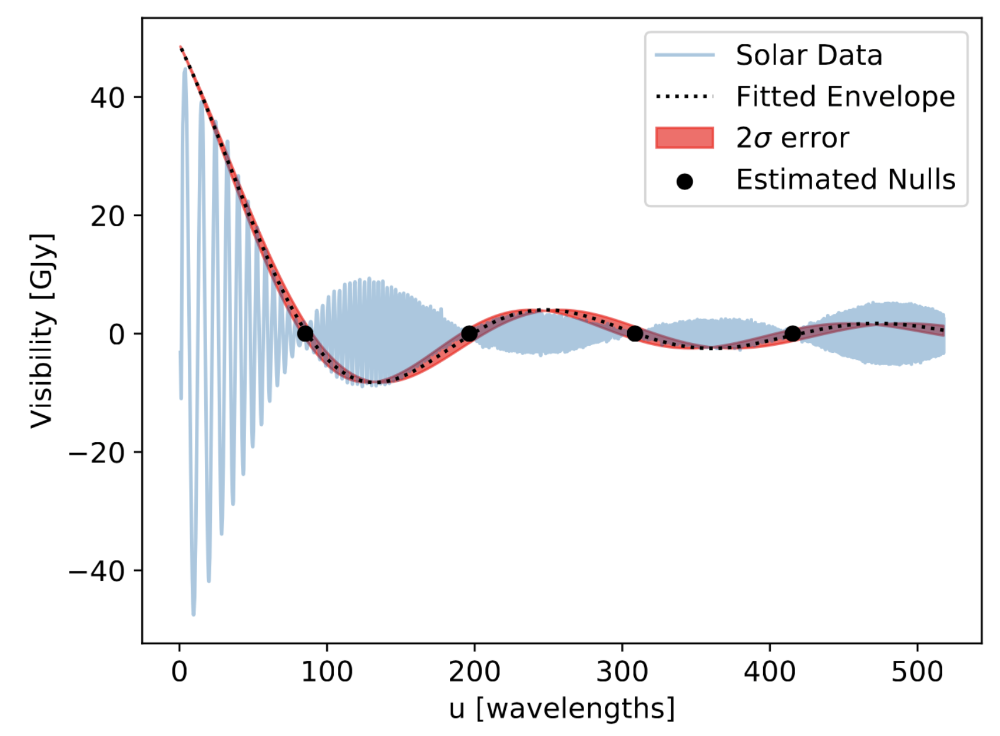

Hi! I'm Max Lee
I am a graduating astrophysics and physics double major at the UC Berkeley. I research the structure and evolution of the universe using weak gravitational lensing. I am particularly interested in understanding what model best describes the universes evolution and what parameters describe that model! I have worked on this problem with Vanessa Boehm and the Berkeley Center for Cosmological Physics by building a differentiable weak gravitational lensing simulation
MADLens.
On the experimental side, I work with the Hydrogen Epoch of Reionization Array (HERA) which is a 21-cm experiment searching for information about the first energy emitting sources to form. I have worked with Josh Dillon and Aaron Parsons to analyze the effectivity of the calibration scheme, and have helped diagnose and mitigate issues that have arrised. I love being a part of a team effort to accomplish a great feat of science, and enjoy the opportunity to
analyze data straight from the telescope!
Current Projects
MADLens

I have dedicated the majority of my time to working with Dr. Vanessa Boehm and Dr. Yu Feng at the Berkeley Center for Cosmological Physics working on the development of a weak gravitational lensing simulation that is fully differentiable with respect to cosmological parameters and initial density modes. This is an incredibly exciting project that allows for cosmological parameter estimates from upcoming surveys like Euclid and LSST. With stage IV surveys comes unprecedented accuracy in measurements, requiring a models that can match this accuracy, and methods of parameter estimation that use the full information content of the survey. This has been a notorious problem for weak gravitational lensing by cosmic shear. In general, cosmic shear measures the correlation between distortions of galaxies due to gravitational deflections. With these correlations one can extract the projected matter density field along a line of sight, which is almost magical, but for this analysis to be practical general approximation are made. The most notorious is that the cosmic shear field can be considered gaussian, and fully described by its power spectrum and two point correlation functions. This is not the case, Just look at the convergence map to the left! This is an output simulated by MADLens, theres clearly non-gaussian structure (see the clustinring areas, the nulls and voids). There has been work to incorperate higher order statistics such as the angular bispectrum, trispectrum, etc. Alternative methods to extract information has arisen, and there are promising results using peak counts, peak nulls, minkowski functionals, at infinitum, but all of them lack consideration of the full, non-gaussian field.MADLens bridges this gap by accurately simulating the full cosmic shear field using a highly parallelized Nbody simulation code fastPM, incorperating small scale baryonic effects using a parameterization (Potential Gradient Descent) which has been trained on high resolution hydrodynamical simulations, using an interpolation method to sharpen the accuracy between simulation steps, and on top of all of that... It is written in an automated differentiation architecture allowing for the derivative of the entire simulation. The end goal is to use the gradient of the simulation in tandem with gradient based optimization methods (such as Hamiltonian Mone Carlo Methods, or Maximum A Posteriori estimates) on stage four survey data to find accurate cosmological parameter estimates.
HERA
Miscellaneous Physics
The Galaxy is... Warped?

Chaos! It's Chaos I Tell You
For a class project, I investigated introductory non-linear dynamics and chaos theory. I found it to be fascinating, and found the geometric approach to understanding chaos to be perfect for me. I love to visualize things, and mess around with the buttons and see how it changes results. I gave a presentation to my professors on chaos theory, and developed a number of simulations of chaotic systems along the way. I brought some of the highlights here. First up is the duffing oscillator which models a spring, if the spring doesnt strictly obey Hookes law. It's pretty much a nonlinear spring. The system is a great example and introduction into Strange Attractors, where the trajectory in phase space is chaotic, but the system tends to move chaoticly on some surface... Well, if you take a slice of the systems trajectory and then take another slice right next to it, and another, and etc... you get a series of Poincare plots. When Animated, they become a pretty picture!
This Poincare section (or multiple sections) are rich in information content and description. One of the cooler aspects is that they are Fractals! If we zoom in on a portion of the Poincare section we find that there is an infinit number of line that never cross. We can keep zooming in and in and in and we will always find infinite non crossing lines. Though... We cant simulate that much infinity, so the scatter will have to do.
How Big is the Sun, Really?

Publications & Other Writing
- V. Bohm, Y. Feng, M. Lee, B. Dai MADLens: Package for Fast and Differentiable Non-Gaussian Lensing Simulations. In Prep
- J.S. Dillon, M. Lee, A.R. Parsons, et al. Redundant-Baseline Calibration of the Hydrogen Epoch of Reioniztion Array. Published MNRS 11-02-2020: arXiv:2003.08399
- 1M. Lee and J.S. Dillon,Memo #72: Explaining and Mitigating the Temporal Structure of Calibration Solutions, 09-2019
- 2M. Lee, J.S. Dillon, A.R. ParsonsExplaining the Temporal Structure in HERA's Redundant Calibration Solutions Astronomy Poster Summer Intern Symposium, Berkeley, CA, 8-2019
2 [Poster]